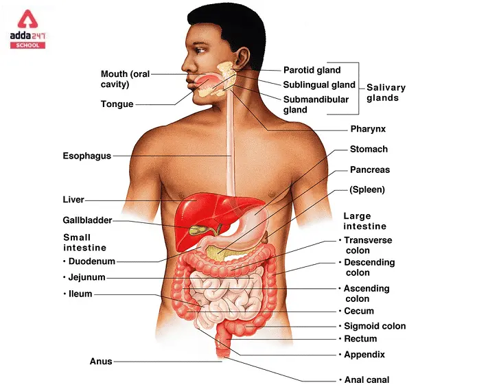
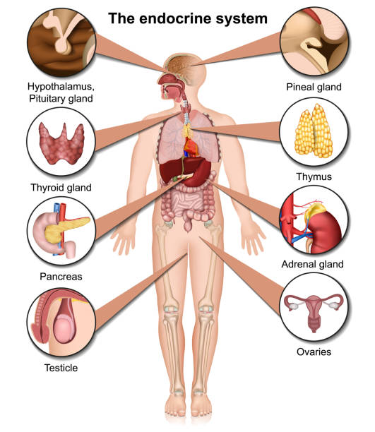

body system
- circulatory system
- circulatory system moves materials between body systems, including oxygen, nutrients, hormones, and waste products.
- It includes the heart, arteries, and veins. This system takes only about a minute to circulate the whole body’s entire blood volume thus making this a truly high-speed expressway for distributing oxygen, nutrients, messages, and removing waste.
- Digestive System or Excretory System
- This system intakes food , breaks it down into usable nutrients and excretes solid waste products.
- It includes the mouth, oesophagus, stomach, and intestines. One of the most important purposes of food is to serve as cellular fuel.
- Endocrine system
- this system sends secret messages to allow body systems act cooperatively.
- These secret messages have their own unique purpose.

